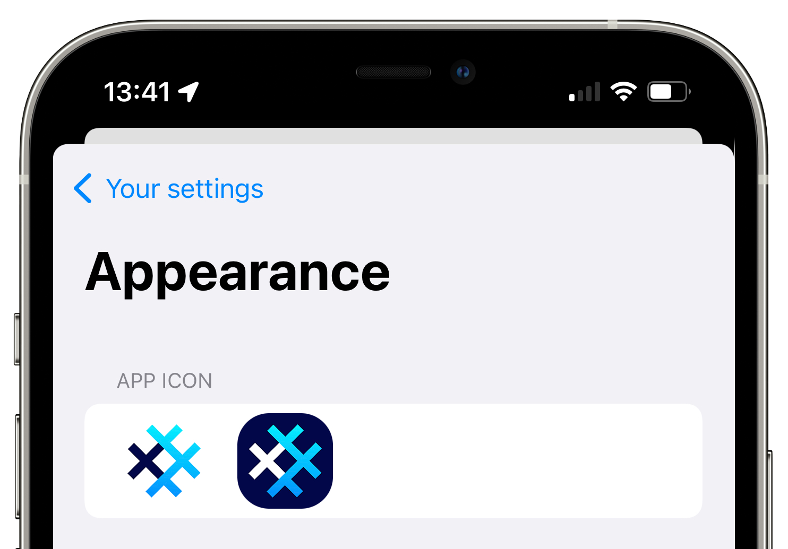

SimpleX Chat v3.1 is released
Published: Aug 8, 2022
What's new
- secret chat groups!
- access to messaging servers via Tor
- advanced network settings
- published chat protocol
- new app icons
- other changes since v3:
- optimized battery and traffic usage - up to 90x reduction!
- two docker configurations for self-hosted SMP servers
Secret chat groups


It's been nearly a year since the users of SimpleX Chat terminal app started experimenting with the groups, and now it is available to mobile app users as well. Many bugs were fixed, the stability was improved, but there are both the features we need to add and the bugs we need to fix to make groups more useful - we really look forward to your feedback. You can send any suggestions via the app by choosing Chat with the developers via app Settings (or using /simplex command in the terminal app) – this would connect you to SimpleX team via its fixed chat address.
SimpleX network is decentralized, so how do groups work? Unlike Matrix or Signal that host the group profile and the list of group members on their servers, SimpleX servers have no information about the group's existence - only its members do. SimpleX network does not assign any globally unique identifiers to the group, there is only a local database identifier and the list of members stored on members' devices. A user has an independent connection to each member in a group. When a user sends a message to the group, the app sends this message independently to each member. You can read more about how groups work in SimpleX Chat Protocol.
But how can it scale, you might ask? It simply won't, and the current design for the groups is only suitable for relatively small groups of people who know each other well, definitely not larger than few hundred members – this design prioritized privacy and security of the group over its size or performance. For example, to send a message to the group of 100 members a user would need to send a total of ~1.6mb of data (as each message uses a fixed size block of 16kb). And if you were to send a 1mb file then it would also require sending it 100 times (provided each member accepts it).
What if you need to send many large files to group members? We will be developing a file hosting server where the users will be able to upload the file (or image) once, and only send the file link and credentials to all group members, without the need to send the actual file. A small hosting quota will be available to all users for free, paid for by donations, and for larger files or to increase the total quota the users would either have to pay a small hosting cost or to self-host this server – it will be available as an open-source code.
What if you need to have a large group - e.g. 100,000 members or more? We will be introducing SimpleX channels later this year, that can be both public and private. These channels would require a server to host them, either provided by SimpleX Chat or self-hosted - same as for a website. If this is a public channel it would be optionally accessible via the web browser as well, and it will be possible to embed it into any webpage.
Other group improvements we will add soon:
- manage notifications in each group independently.
- search for messages - it is useful for direct conversations too, but more important for groups.
Access messaging servers via Tor


SimpleX protocols are focussed on protecting application-level meta-data – they don't have any user identifiers used by all other messaging platforms, instead relying on pairwise connection identifiers.
But there are scenarios when users need to protect their IP addresses from the servers and any network observers – this is best done by using Tor to access any network services.
This release allows to access SimpleX messaging servers via Tor on all platforms:
- terminal app beta supported it for a couple weeks now: to access SimpleX servers via Tor you need to install Tor proxy and run simplex-chat with
-xoption. See terminal app docs for more information. - Android app supports access via Tor using Orbot SOCKS proxy. Once you install and start Orbot, you need to enable
Network & Servers / Use SOCKS proxysetting in the app to access SimpleX servers via Tor. - iOS app can also be used with Orbot iOS app (that is installed as a system-wide VPN provider). The only setting you might need to change is to increase network timeouts in the app - to do that you have to enable
Developer tools, and then choseNetwork & Servers / Advanced network settings / Set timeouts for proxy.
Currently all servers are accessed via their public Internet addresses, and while users can self-host messaging servers on .onion addresses (as v3 hidden services), it would require both connected contacts to use Tor. We are planning to add support for dual server addresses very soon, to allow the same server to be accessed both via its public Internet address and via .onion address, so that users can access servers without exiting Tor (via .onion address), but their contacts can access the same servers without using Tor.
Advanced network settings
To reduce traffic on slow networks we added network access settings. To use these settings, you need to first enable Developer tools and then choose Network & Servers / Advanced network settings:
- if your connections to the servers are unstable, and you frequently see the spinners in the list of chats, please increase the connection and protocol timeouts - it should reduce the traffic, but it may also make the app a bit slower when your Internet connection is slow.
- if your connection to the servers appears stable, but the traffic usage is high, please try disabling TCP keep-alive setting or increasing keep-alive idle period (
TCP_KEEP_IDLE) and interval (TCP_KEEP_INTVL).
Once we investigated how these settings affect traffic and user experience we will simplify them - huge thanks to everyone testing them and reporting any traffic issues.
New app icons
Many users asked to allow customizing the app, this is just a start - you can now choose either light or dark icon option via Appearance settings.
More options to customize the app are coming - please let us know what are the most important.
Published chat protocol
The low level SimpleX protocols were published long time ago, and updated to reflect the evolution of the protocols, the high level chat protocol was not published before. The reason for that was to allow us to iterate it quickly, without committing to any of the decisions.
This is the first draft of SimpleX Chat Protocol - let us know any questions or suggestions.
Other changes since v3
Since v3 release we also optimized battery and traffic usage - with up to 90x traffic reduction in some cases – and published two docker configurations for self-hosted SMP servers. Read more about it in the previous beta version announcement.
SimpleX platform
Some links to answer the most common questions:
How can SimpleX deliver messages without user identifiers.
What are the risks to have identifiers assigned to the users.
Technical details and limitations.
How SimpleX is different from Session, Matrix, Signal, etc..
We ask you to help us pay for 3rd party security audit
I will get straight to the point: I ask you to support SimpleX Chat with donations.
We are prioritizing users privacy and security - it would be impossible without your support we were lucky to have so far.
We are planning a 3rd party security audit for the app, and it would hugely help us if some part of this $20000+ expense could be covered with donations.
Our pledge to our users is that SimpleX protocols are and will remain open, and in public domain, - so anybody can build the future implementations for the clients and the servers. We are building SimpleX platform based on the same principles as email and web, but much more private and secure.
If you are already using SimpleX Chat, or plan to use it in the future when it has more features, please consider making a donation - it will help us to raise more funds. Donating any amount, even the price of the cup of coffee, would make a huge difference for us.
It is possible to donate via:
- GitHub: it is commission-free for us.
- OpenCollective: it also accepts donations in crypto-currencies, but charges a commission.
- Monero wallet: 8568eeVjaJ1RQ65ZUn9PRQ8ENtqeX9VVhcCYYhnVLxhV4JtBqw42so2VEUDQZNkFfsH5sXCuV7FN8VhRQ21DkNibTZP57Qt
Thank you,
Evgeny
SimpleX Chat founder